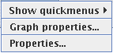
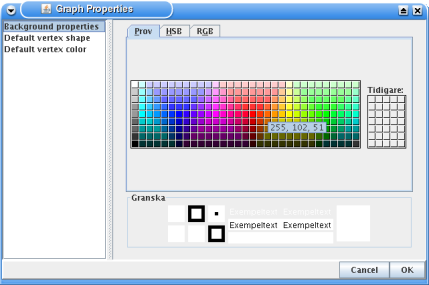
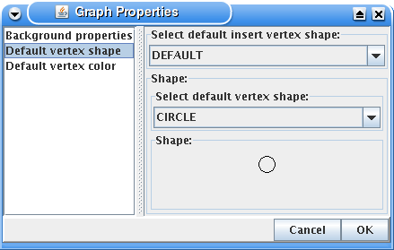
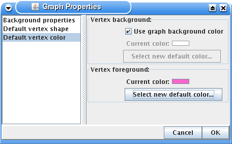
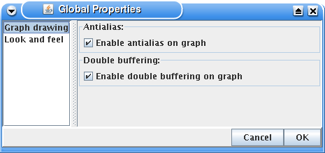
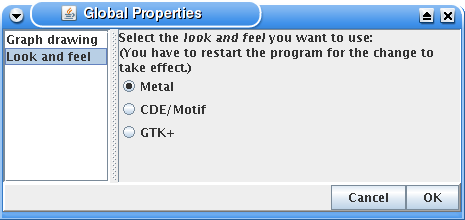

The properties menu contains menu items used to change the properties of the program and the graph. The Show quickmenus alternative shows a submenu where it is possible to select which quickmenus that are displayed.
The dialogs that comes up when Graph properties... and the Properties... alternatives have been chosen, are described in the two next sections.
This dialog comes up when you select the Graph properties... alternative. In this dialog it is possible to select settings that is directly related to the graph. The settings is saved to the graph file when you save a graph and loaded when you open a graph from a file.
The dialog is divided in two parts. One is the list that is to the left. The list contains a number of names of settings modules. To the right, the currently selected settings module is displayed. To switch between settings module click on the name of the settings module that you want to change. To save all changed settings that have been done in the different settings modules click on the ok button in the bottom right corner. If you don't want to save the changes click on the cancel button. The different settings modules are described in the sections below.

Here the background color of the graph is selected.

In this module you can select the default vertex shape. The default vertex shape is the shape of the vertex that is inserted when you insert vertices. The shape that you select in the drop down menu in the top of the module is displayed under it.
There exists one shape called DEFAULT that is different from the others. The DEFAULT shape can be any of the other shape. Therefore when you select the DEFAULT shape it is also possible to select which shape that shall be set as the DEFAULT at the moment. If you have inserted vertices with the DEFAULT shape it is possible to change them afterward by changing the actual shape of the DEFAULT shape.

Here it is possible to select the default vertex color. That is the color of the vertices created with insert commands like clicking in the graph window when insert mode is on. The module is divided into two parts.
In the upper part you can select the background color of vertices. That is the color inside the selected shape that has borders with the foreground color. One option is to use the graph background color of the graph as the background color for vertices. If you unselect that option it is possible to choose a background color by clicking on the Select new default color... button.
You can select the default vertex foreground color in the lower part. The foreground color is the border of the shape that the vertex is made up by.
The global properties is the program properties that is used for all opened programs. The global properties is saved in the file .grapheditor/properties.xml that is placed in the user home directory. The user home directory is the directory given by the java system as the home directory. The dialog's structure is the same as in the graph properties dialog. The different settings modules in it are described in the sections below.

Here you can change some drawing alternatives for the graph.

In this module you can select the look and feel for the program. A look and feel is a collection of settings that decide how the user interface will look and behave. Which look and feels that is available depend on the java version the program is running on.